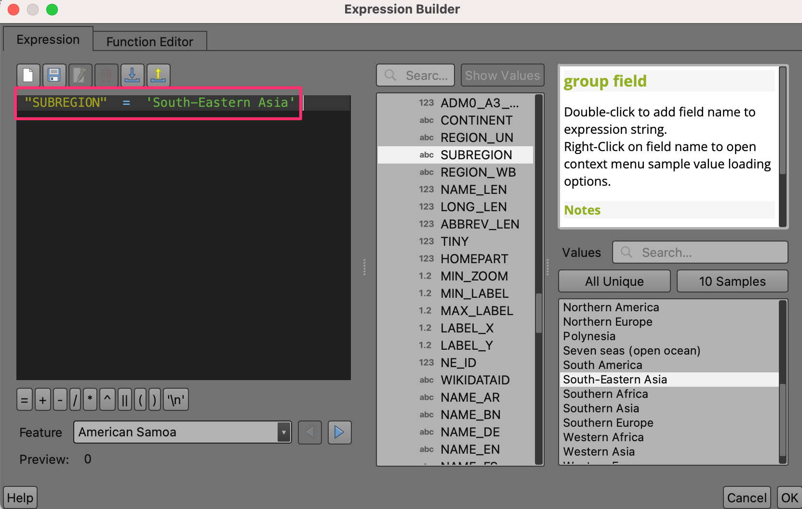
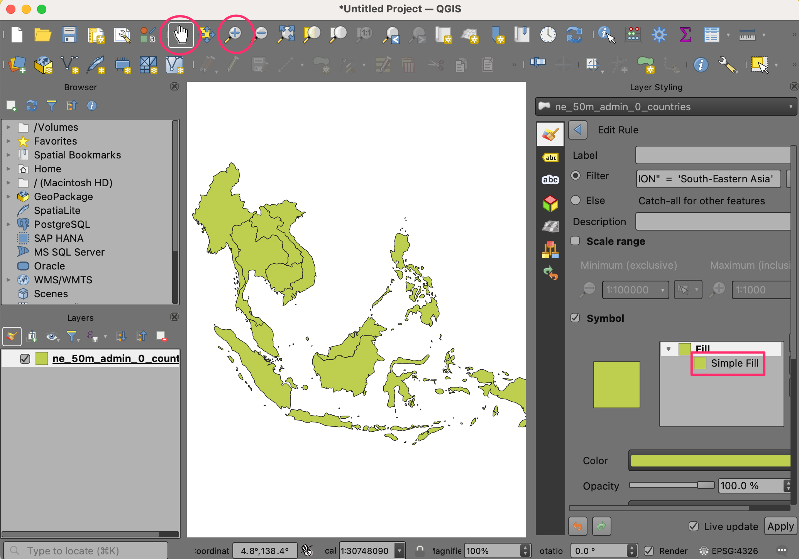

Basis filteren en opmaken met expressies (QGIS3)¶
Bijgedragen door: Steven Kim
Expressies bieden een krachtige manier om waarden van attributen, geometrieën en variabelen te bewerken om dynamisch kaartobjecten direct aan te passen. Deze handleiding is een introductie voor enkele algemene expressies en hoe zij bij het maken van kaarten worden gebruikt.
Overzicht van de taak¶
We zullen expressies gebruiken om objecten te filteren op hun attributen uit een landenlaag van Natural Earth en ze dan opmaken om ene kaart van zuidoost Azië te maken met elk land opgemaakt in een gradatie van groen.

De gegevens ophalen¶
Natural Earth has the admin shapefiles for countries. On the downloads page look for Cultural option under the
Medium scale data.

Download het Shapefile
Admin 0 - Countries. U zult zien dat het bestandne_50m_admin_0_countries.zipzal worden gedownload, dat zal worden gebruikt voor deze handleiding.

Voor het gemak kunt u direct een kopie van bovenstaande laag downloaden vanaf hieronder:
Gegevensbron [NATURALEARTH]
Procedure¶
Zoek in de QGIS Browser naar het bestand
Natural_Earth_quick_start.zipen vergroot het. Selecteer het bestandne_50m_admin_0_countries.shpen sleep het naar het kaartvenster.

Een nieuwe laag
ne_50m_admin_0_countrieszal nu in QGIS worden geladen en u zou een kaart van de wereld moeten zien. Klik op Paneel Laag opmaken openen.

Schakel van Enkel symbool naar Regel-gebaseerd.

Double-click on the default rule to enter the Edit Rule dialog.

To filter using an expression, click the Filter ε.

You have entered the Expression Builder. This dialog provides the main interface to write expressions and can be accessed in many ways. It contains an input box on the left, a list of functions in the middle and a help box on the right.

Vergroot, in de lijst het midden, om de velden te verkennen die te vinden zijn in de laag
ne_50m_admin_0_countries.

Klik op het veld
SUBREGIONom dat te selecteren en klik op Alle unieke in het rechterpaneel om alle unieke waarden voor subregion te bekijken.

Selecteer, na het verkennen, het van Expressie aan de linkerkant om de expressie als volgt in te voeren en klik op OK.
"SUBREGION" = 'South-Eastern Asia'
U zou ZO Azië moeten zien. Verplaats en zoom naar het midden van de regio in uw kaartvenster.

Nu we een expressie hebben gebruikt om de objecten te filteren, laten we een expressie gebruiken om elk land een kleur te geven, gebaseerd op het veld
MAPCOLOR7. Scroll naar beneden naar de opties Symbool in het paneel voor de opmaak en selecteer Standaard vulling om de opties voor de opmaak op te halen, zoals vulkleur, lijnkleur en meer. Klik op de knop Data-bepaalde ‘override’ voor de Vulkleur en selecteer Bewerken… in het menu.

Dat brengt het dialoogvenster Expressiebouwer naar voren voor de vulkleur. Voer de volgende expressie in:
set_color_part(ramp_color('Greens',scale_linear("MAPCOLOR7",1,7,0.2,1)),'alpha',100)
This expression contains multiple functions: set_color_part() to set alpha or transparency, ramp_color() to apply a color ramp and scale_linear() to use the field MAPCOLOR7 in setting the color for each country. In this example, we are using greens, setting the alpha at 100 out of 255 and scaling MAPCOLOR7 from it’s original range of 1-7 to 0.2-1, which will look nice with ramp_color.

Notitie
De gegevenslaag van Natural Earth heeft verscheidene velden, genaamd MAPCOLOR7, MAPCOLOR8 etc. Deze velden bevatten numerieke waarden die worden gebruikt om de kaart te kleuren, zodat tegen elkaar aanliggende polygonen niet dezelfde kleur hebben. Er zijn versies met 7,8,9 of 13 kleuren.
Klik op OK om het dialoogvenster te verlaten. Wijzig, in het dialoogvenster Regel bewerken, de Lijnstijl naar . U zou de landen nu in de kleur groen moeten zien. Klik op Toepassen.

We hebben een mooi opgemaakte kaart gemaakt, door te filteren en een kleurverloop toe te passen op de gegevenslaag, door alleen expressies te gebruiken.

If you want to give feedback or share your experience with this tutorial, please comment below. (requires GitHub account)